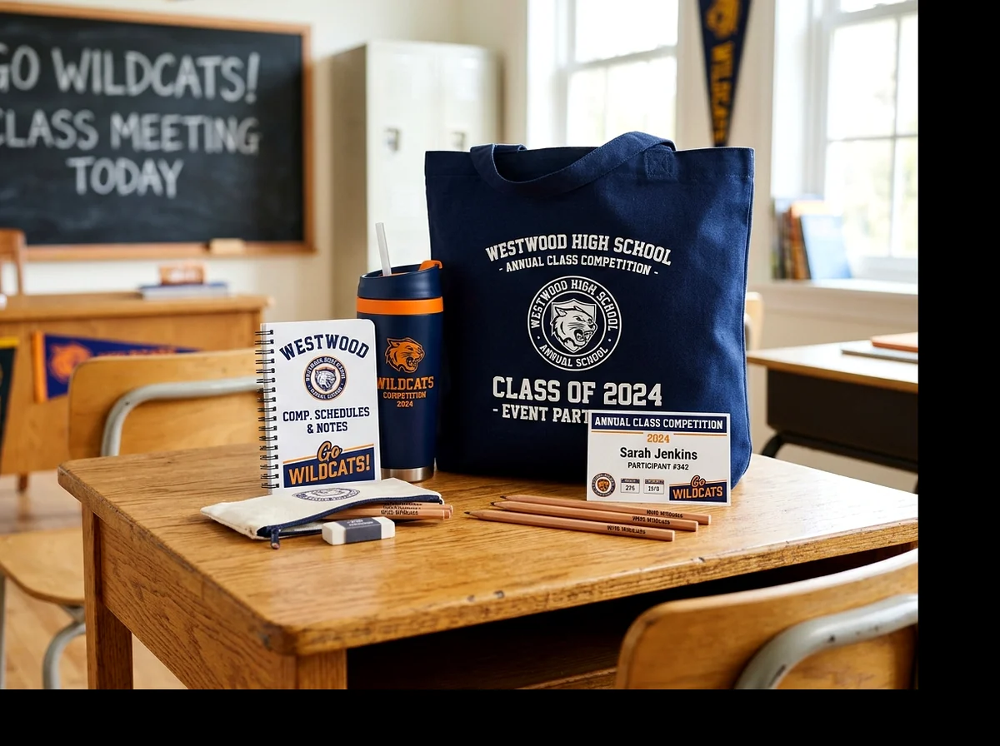

Cara Memilih Vendor Goodie Bag Wisuda untuk Sekolah dan Kampus

Vendor goodie bag wisuda sebaiknya dipilih melalui pemeriksaan sampel, kejelasan spesifikasi, kesesuaian kapasitas produksi, kontrol kualitas, serta kepastian jadwal pengiriman.
📌 Ringkasan Inti Panduan:
- Susun lembar spesifikasi teknis tas secara mendetail sebelum meminta penawaran harga vendor.
- Bandingkan penawaran berdasarkan kualitas material yang setara (apple-to-apple), bukan semata angka terendah.
- Tinjau dokumentasi portofolio fisik asli dan uji sampel prototipe nyata dengan memasukkan map ijazah.
- Pastikan klausul persetujuan desain (sign-off proofing) dan garansi kontrol kualitas (QC) tertera jelas.
- Alokasikan jadwal tenggat aman untuk pengiriman logistik, penghitungan koli, dan penataan paket.
1. Mengapa Pemilihan Vendor Goodie Bag Wisuda Penting?
Vendor goodie bag wisuda memengaruhi konsistensi bahan, kerapian jahitan, ketepatan logo almamater, keamanan pengemasan, dan kesiapan serah terima sebelum prosesi dimulai.
Seremoni kelulusan sekolah dan universitas memiliki batas waktu (deadline) yang kaku dan tidak dapat ditunda. Keterlambatan pengiriman tas suvenir sehari saja berpotensi mengacaukan keseluruhan agenda distribusi map ijazah wisudawan. Di sisi lain, tas yang selesai tepat waktu namun memiliki ukuran kekecilan atau tali rapuh akan memicu kepanikan di meja registrasi kelulusan.
Oleh sebab itu, penilaian terhadap konveksi mitra tidak boleh berhenti pada keindahan foto media sosial atau janji harga termurah. Panitia wajib mengukur kesiapan operasional pabrik, kejelasan alur administrasi faktur pajak instansi, serta responsivitas layanan pelanggan saat terjadi dinamika pesanan mendadak.
2. Apa Saja Spesifikasi yang Harus Disiapkan Sebelum Memesan?
Spesifikasi goodie bag wisuda wajib merinci model tas, dimensi ruang pakai bersih, jenis kain, teknik aplikasi logo, kuantitas order, alamat drop point koli, dan batas waktu serah terima.
Susun lembar spesifikasi dengan istilah teknis baku agar vendor memberikan harga yang akurat:
- Dimensi Tas: Sebutkan tinggi x lebar x lipatan bawah/samping (misal: 40 x 30 x 10 cm). Tekankan bahwa ukuran tersebut adalah ruang bersih dalam (inner usable space), bukan sekadar lembaran kain sebelum terpotong jahitan kampuh.
- Jenis & Gramasi Bahan: Spesifikasikan varian kain (contoh: kanvas twill 14 oz, blacu greige katun, drill American grade A, atau spunbond 100 GSM). Pelajari panduan bahan di Bahan Goodie Bag Wisuda.
- Format Logo: Lampirkan file logo vektor asli institusi (.AI, .CDR, atau .PDF kurva) lengkap dengan kode referensi warna almamater (pantone atau hex code) untuk menghindari deviasi warna sablon.
- Kekuatan Handle: Tentukan panjang tali jinjing (standar 55–60 cm untuk dipundak) dan minta jahitan perkuatan silang ganda (box stitch) di pertemuan tali tas.
3. Bagaimana Memeriksa Portofolio dan Sampel Vendor?
Pemeriksaan mitra konveksi tas wisuda sebaiknya mengandalkan foto riil produksi massal dan pengujian prototipe fisik fungsional.
Banyak vendor menampilkan rendering desain digital (mockup) 3D yang sangat memukau di layar komputer. Namun, mockup tidak dapat menunjukkan kerapian tusukan jarum, kebersihan obras, atau ketahanan gesek kain. Mintalah dokumentasi foto pengerjaan tas untuk institusi universitas atau instansi pemerintah yang pernah dikerjakan sebelumnya. Lihat contoh rekam jejak kami di Profil Workshop & Konveksi Kami.
Ketika prototipe sampel tiba di tangan panitia, lakukan uji beban nyata. Masukkan map ijazah F4, buku tahunan, dan suvenir tumbler yang telah disiapkan (simak ide isinya di Ide Souvenir Wisuda). Angkat tas, ayunkan secara wajar, dan periksa apakah ada tegangan berlebih pada sambungan kain atau benang yang meregang.

4. Teknik Cetak Mana yang Sesuai untuk Logo Kampus?
Pemilihan metode cetak logo harus disesuaikan dengan jenis bahan dasar tas, gradasi warna lambang almamater, dan kuantitas produksi.
Sablon Manual Rubber / Plastisol
Metode terbaik dan paling ekonomis untuk pesanan berjumlah ratusan hingga ribuan pcs dengan desain logo vektor 1 sampai 3 warna solid. Tinta rubber pasta elastis sangat rekat pada kain kanvas, blacu, dan drill, serta tidak mudah retak saat tas dilipat.
Transfer Digital Film (DTF)
Sangat ideal untuk lambang universitas yang memiliki perpaduan warna rumit, gradasi foto, atau maskot kampus dengan detail mikroskopis. Warna tampil tajam dan cerah, tetapi pastikan vendor menggunakan lem powder DTF grade A agar cetakan tidak mudah mengelupas.
Bordir Komputer Presisi
Memberikan kesan formal, berkelas, dan paling tahan lama untuk tas wisuda berbahan drill atau kanvas premium. Sangat cocok diterapkan pada paket goodie bag VIP jajaran senat dan pimpinan rektorat.
5. Bagaimana Mengelola MOQ dan Perbandingan Penawaran?
Evaluasi penawaran harga pengadaan tas wisuda wajib membandingkan komponen bahan, ukuran jadi, metode branding, dan biaya pengiriman secara seimbang.
Minimum Order Quantity (MOQ) konveksi tas umumnya berada di angka 50 hingga 100 pcs per desain model. Jika kampus Anda memiliki 5 fakultas dengan warna atau nama yang berbeda, diskusikan apakah MOQ berlaku per total keseluruhan pesanan kampus atau dihitung per sub-desain fakultas.
Waspadai penawaran harga yang jauh di bawah standar pasar. Sering kali penghematan biaya tersebut diperoleh dengan memotong ukuran lebar tas 2–3 cm, menipiskan gramasi kain dari 100 GSM menjadi 70 GSM, atau meniadakan jahitan penguat tali. Tabel berikut membantu Anda membedah penawaran vendor secara sistematis:
6. Tabel Komponen Evaluasi Vendor Goodie Bag
| Komponen Evaluasi | Poin Kritis yang Wajib Ditanyakan | Bukti Fisik / Dokumen Verifikasi |
|---|---|---|
| Spesifikasi Material | Apakah jenis dan gramasi kain sesuai pesanan? Apakah ada risiko kain luntur atau menyusut? | Katalog swatch sampel kain fisik dan foto serat makro. |
| Dimensi Jadi | Berapa ukuran ruang bersih dalam setelah dilipat dan diobras pinggirnya? | Sampel fisik utuh yang sudah diuji muat map ijazah F4. |
| Kualitas Branding | Apakah warna sablon sesuai standar panduan warna institusi (pantone matching)? | Approval mock-up tertulis dan sampel cetak 1 pcs. |
| Kapasitas & Lead Time | Berapa output produksi harian pabrik dan berapa kapasitas jahit cadangan jika lembur? | Jadwal tahapan produksi tertulis dalam Purchase Order. |
| Quality Control (QC) | Bagaimana mekanisme penggantian jika ada cacat cetak, bolong, atau tali putus? | Klausul garansi retur dan penggantian barang cacat. |
| Kemasan & Ekspedisi | Bagaimana pembagian koli karung/dus dan apakah dilindungi plastik inner anti-air? | Rincian daftar koli (packing list) berlabel fakultas/gelombang. |
7. Bagaimana Menyusun Jadwal Produksi Tanpa Terburu-buru?
Jadwal pengadaan goodie bag wisuda idealnya ditarik mundur minimal 4 hingga 6 minggu sebelum hari wisuda dilaksanakan.
Jangan menetapkan batas waktu pengiriman vendor bertepatan dengan tanggal gladi bersih atau hari seremoni. Susun linimasa pengadaan dengan tahapan terukur:
- Minggu 1: Finalisasi spesifikasi, approval anggaran panitia, dan pengiriman tender penawaran vendor.
- Minggu 2: Penerimaan sampel fisik prototipe, pengujian muat map ijazah, dan persetujuan cetak (sign-off design).
- Minggu 3–4: Produksi massal di konveksi (cutting pola kain, sablon/bordir, proses jahit, dan QC garmen).
- Minggu 5: Pengiriman cargo ekspedisi, penerimaan koli di gudang kampus, dan pemeriksaan sampling oleh panitia.
- Minggu 6 (Hari Tenang): Pengisian suvenir ke dalam goodie bag wisuda dan pengelompokan per loket pembagian fakultas.
8. Apa Saja Poin Quality Control saat Pesanan Tiba?
Pemeriksaan akhir barang tiba harus memverifikasi jumlah fisik per koli, kerapian tusukan jahitan, kebersihan permukaan, dan akurasi nama fakultas sebelum didistribusikan.
Saat koli pertama kali dibongkar di ruang panitia, ambil sampel acak sekitar 5–10% dari total pesanan. Periksa hal-hal berikut:
- Kekuatan Sambungan Tali: Tarik tali jinjing dengan tenaga tangan wajar untuk memastikan benang jahitan terkunci mati dan tidak ada sisa benang jahit yang terurai.
- Kebersihan Kain: Pastikan tidak terdapat cipratan noda tinta sablon, oli mesin jahit, atau noda debu gudang pada badan tas.
- Akurasi Ejaan Logo: Teliti tulisan nama fakultas, gelar kesarjanaan, atau tahun kelulusan pada sablon tas agar tidak terjadi saltik (typo).
9. Bagaimana Menyiapkan Distribusi untuk Acara Wisuda Besar?
Distribusi goodie bag wisuda berskala ribuan lulusan akan berjalan lancar jika kemasan koli ditandai kode warna atau label fakultas yang tegas.
Mintalah konveksi mitra untuk mengemas tas dalam kelipatan rapi (misal per 50 pcs per kantong plastik inner transparan, lalu dimasukkan ke dalam karung koli bersegel). Di luar karung koli, tempelkan label identitas besar bertuliskan: Nama Fakultas - Jenjang - Jumlah Isi. Langkah sederhana ini memangkas waktu pencarian barang di gudang wisuda hingga 70% dan mencegah antrean panjang wisudawan di meja penukaran berkas.
10. Pertanyaan Umum Seputar Vendor Tas Wisuda (FAQ)
11. Kesimpulan Praktis Pemilihan Vendor
Memilih vendor goodie bag wisuda adalah proses membangun kemitraan yang dapat diverifikasi dan dipercaya. Siapkan lembar spesifikasi tertulis, ujilah sampel prototipe nyata, tetapkan standar mutu kontrol kualitas, dan kelola linimasa waktu secara disiplin. Untuk melihat pedoman pemilihan bahan kain tas, rujuk ke panduan Bahan Goodie Bag Wisuda dan panduan utama Goodie Bag Wisuda.

Ditulis oleh Devaliana Tensa
Praktisi konveksi tas, garment merchandiser, dan founder workshop Goodie Bag Malang dengan pengalaman lebih dari 8 tahun dalam produksi tas seminar, goodie bag pameran, dan suvenir custom korporat di Indonesia.
Panduan Terkait Seputar Goodie Bag & Souvenir Wisuda